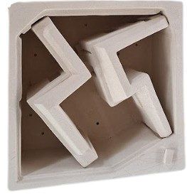

Klitzner's project
Insert main ideas
If these gaps are here on the final – we can fill them with soil or a fine sand material. Would be nice to fill it with a sand material and stoneware grog – similar to the colour of the clay body Don’t worry about them. W e like the colour and feel of the sculptural forms, Thank you it is looking very exciting If you do glaze it could you use a very thin layer of a mat transparent glaze.
Making of Klitzner's project


